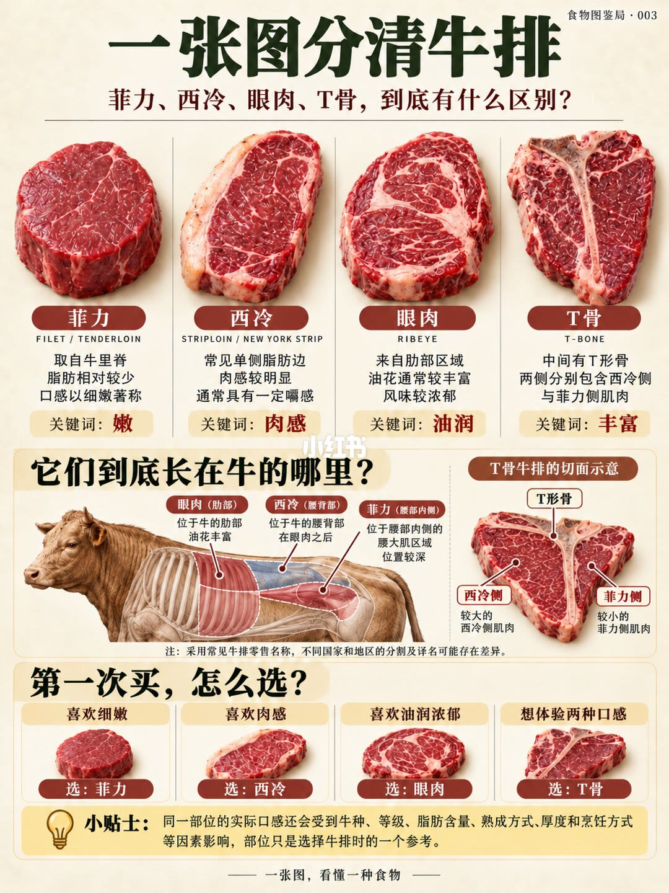

图文实录 · 小红书 · 食物图鉴局
菲力、西冷、眼肉到底差在哪？终于分清了
一张图用脂肪和骨头把四块牛排分开：菲力最嫩、西冷有一条脂肪边、眼肉油花多、T 骨两边是两种肉。
1/1
四块肉，四个关键词
菲力取自里脊，脂肪少，肉细，关键词是嫩。西冷常见一侧有一条明显脂肪边，肉感清楚，带一点嚼劲，关键词是肉感。眼肉在肋排段，油花通常更密，风味浓，关键词是油润。T 骨中间是 T 形骨，两侧分别是西冷和菲力，关键词是丰富。
牛的示意图把眼肉放在肋骨，西冷在眼肉后面的腰段，菲力在腰内侧、活动少的那条肌肉。T 骨剖面标出大的一侧是西冷、小的一侧是菲力。
第一次买：要嫩选菲力，要肉感选西冷，要油润选眼肉，想一次吃两种口感选 T 骨。页脚写实际味道还受牛种、等级、脂肪、熟成、厚度和煎法影响，部位只是其中一个参照。

汇总
部位不能单独决定好不好吃
图上的选择是偏好，不是等级排名。菲力嫩是因为脂肪少、肌肉活动少；眼肉浓是因为油花。同一部位还会被厚度、熟成和火候改掉。这张图没有写几分熟或价格。